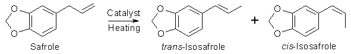

Introduction
Many ways of isomerizing safrole (3,4-Methylenedioxyallylbenzene) into isosafrole (3,4-Methylenedioxy- propenylbenzene) can be found in the
literature. The isomerizations, which in all reviewed cases are catalytic, often have high yields, but differs greatly in easiness and
reaction times. The availability and costs of the catalysts also differ over a broad range.

The reaction, which is general for the conversion of nearly all allylbenzenes (like safrole, apiole, dillapiole and elemicin) to their
corresponding propenylbenzene isomer, is usually carried out by heating the allylbenzene together with an inorganic catalyst or catalyst
mixture under reflux, with or without the use of a solvent. After the reaction is finished, the catalyst is removed by filtration, any
solvent removed under vacuum, and the residue is distilled to purify the propenylbenzene from unreacted allylbenzene and polymerized material.
Physical properties
Compound |
Melting Point |
Boiling Point |
Safrole |
11�C |
232-234�C |
trans-Isosafrole |
8.2�C |
253�C (760mm), 179.5�C (100mm),
135.6�C (20mm), 85-86�C (3.5mm) |
cis-Isosafrole |
-21.5�C |
77-79�C (3.5mm) |
The isomerization always gives a mixture of both cis- and trans- isomers of the propenylbenzene (approx 30:70 using standard hydroxide ion catalyzed
isomerization). The trans-propenylbenzene is thermodynamically more stable than the cis-propenylbenzene, so with longer reaction times, the ratio of the
trans-isomer is increased in respect to the cis. As increasing the reaction time beyond the necessary for converting the allylbenzene will lower the yield
of the product propenylbenzenes (due to side reactions), so attempts to influence this ratio is usually not made. Because the reaction produces mixture of
isomers rather than a single compound, the boiling point of the propenylbenzene is never sharp. In the case of isosafrole, the trans isomer boils at approx
10�C higher than the cis, so the isosafrole isomers are usually collected as a mixture over a temperature range, rather than trying to collect each fraction
separately. In spite of a certain errorneous statement in Total Synthesis II For all practical purposes, cis- and trans-isosafrole reacts just the same, so there is no real point in separating the isomers.

Potassium Hydroxide Catalyzed Isomerization
Vacuum Reflux
Using only KOH as catalyst and doing the reflux under vacuum with no solvent1 is preferable for several reasons.
First, the vacuum helps removing the water (~15%) present in the KOH, and the lower reflux temperature prevents excessive side reactions.
Experimental
Potassium hydroxide (10-12g, 1-2 mole%) was added to 800g safrole
(from sassafras oil fractionally distilled twice) situated in a 2000ml
round-bottomed flask (never fill a flask more than half full), equipped
with an efficient reflux condenser, and with the top of the condenser
attached to a vacuum source of approximately 10-20 mbar capacity. Magnetic
stirring was initiated in the flask, and the suspension was brought
to reflux under vacuum, which was typically attained at approximately
120�C. The reflux was continued overnight, the vacuum source disconnected,
and the reflux condenser was replaced by a fractional distillation setup
with a vigreux column and the isosafrole was distilled, again with good
magnetic stirring. Refraction index measurements shows the reaction
to be mostly completed after approximately 3 hours, but the reaction
was still typically refluxed overnight. Stronger vacuum means longer
reaction times, because of lower reflux temperature. Bigger reactions
than 1000ml of safrole that have the tendency to bump violently, apparently
magnetic stirring isn't good enough anymore. For our industrially oriented
bees: using a capillary to introduce a stream of air bubbles, comparable
to good old-fashioned vacuum distillation should work to circumvent
the batch size limitation.
The KOH residue in the distillation flask can be reused to isomerise
another batch of safrole. The vacuum limits reflux (=reaction) temp
and also helps in removing water formed by the reaction of KOH with
the safrole. The higher the temperature, the faster this reaction will
be over. As a rule of thumb, half the vacuum means lowering the boiling
point about 10�C. A substance boiling at 200�C at 1000mbar (athmospheric)
will boil at 190� at 500mbar, 180� at 250mbar, 170�C at 120 mbar, 160�C
at 60 mbar, 150�C at 30mbar and so on. This is not exact, but can be
used to estimate the expected boiling points roughly. Magnetic stirring
is absolutely necessary. Don't do this with more than 1L safrole, strong
bumping was experienced with bigger amounts. Use distilled safrole!
When there's too much water present, reaction fails. Distill the iso
with column, preferrably collecting the middle 80%. Recycle the first
and last 10%.
Regulating a vacuum and keeping it constant is quite difficult. It's best to use a diaphragm pump at full vacuum. Using a rotary vane oil
pump here doesn't work, because it pulls too much vacuum.
Isomerization with KOH/CaO9
If calcium oxide is added to a mixture of potassium hydroxide and safrole, the reaction becomes less water-sensitive as the CaO reacts with any water
present to form Ca(OH)2. The reaction is also very fast. The downside is that the CaO forms a black insoluble gunk in the reaction flask, and has to
be removed by vacuum filtration with a filter aid before the isosafrole can be distilled off.
Experimental
100 grams of safrole was placed in a 250 ml RB flask fitted with a water-cooled Allihn reflux condenser, and was heated with good stirring. When the
solution started to boil, 1 gram of KOH pellets was added through the condenser, and the safrole immediately took on a brown color. Next, 15 grams of
CaO was also added through the condenser, and the solution was allowed to reflux for 15 minutes, and the heat was turned off, and the solution was
poured into a beaker and was allowed to cool. The dark brown suspension was vacuum filtered through a pad of celite, and the filter cake was washed
with 2x50 ml of CH2Cl2. The CH2Cl2 was removed through distillation at atmospherical pressure, and unreacted safrole was also distilled off at 240�C
(bath temperature), and amounted to about 1 ml. The residue was distilled at aspirator vacuum (~25 mmHg), and the isosafrole came over at 120-130�C
as a water-white oil, weighing 70 grams (70%).
Base catalyzed isomerization using Microwave Heating4
| Solvent |
KOH |
Reaction Time
(Std. reflux) |
Yield |
Reaction Time
(MW reflux) |
Yield |
| EtOH |
2 M |
25 h |
88% |
240 min |
90% |
| EtOH |
4 M |
5 h |
98% |
30 min |
99% |
| EtOH (+ 2M KCl) |
4 M |
4 h |
99% |
20 min |
99% |
| 2-BuOH |
2 M |
4 h |
95% |
60 min |
96% |
| 1-BuOH |
2 M |
1 h |
98% |
20 min |
99% |
| 1-BuOH |
4 M |
15 min |
99% |
3 min |
99% |
Safrole and eugenol isomerization reactions were carried out under microwave irradiation at
atmospheric pressure and homogeneous medium with various alcohols used as solvents and different base
concentrations. The rate reaction enhancement shown was up to 13 times faster than conventional reflux.
To study the microwave irradiation effect over isomerization reactions of safrole at atmospheric pressure and homogeniuous medium, experiments with
various alcohols used as solvents and different base concentrations were carried out in an adapted microwave oven and in conventional reflux.
Experimental
The alcoholic alkaline solution is prepared by the prolonged stirring of 8.8g (or 4.4g for 2M) of KOH pellets in 30ml EtOH. The KOH and
the alcohols were of analytically purity grade. The alkaline solutions is placed in a RB flask provided with reflux condenser then 4.0g
of safrole is added and the solution heated.
The microwave oven used for this study was a 500W Continental 2001. the reflux system was pyrex and adapted through a hole in the ovens
upper wall, having a diameter smaller than half wavelength to avoid microwave radiation escapes.
Potassium Hydroxide and Diethanolamine in 2-Ethoxyethanol 10
Addition of diethanolamine to the isomerization mixture and performing the reaction in 2-Ethoxyethanol (ethylene glycol monoethyl ether) drastically reduces the time
needed for isomerization, as well as lowering the needed temperature, thereby lowering side-reactions occuring at higher temperatures
Experimental
1000g of safrole is added to 10g of potassium hydroxide and 50g of diethanolamine in 360g ethylene glycol monoethyl ether. The temperature is raised to
160-180�C and held there for a few minutes while the isomerization takes place. After the reaction the reaction mixture is poured into 1000ml water and
neutralized with 25% sulfuric acid. The organic layer is separated and the aqueous layer extracted with toluene and the extract added to the organic layer.
After the toluene and water was distilled off, isosafrole distilled over in 95% yield.
Potassium Hydroxide in n-Butanol13
To 91 mL (100g, 620 mmol) safrole were added 500 mL of a 3M solution of potassium hydroxide in n-butanol* and the reaction mixture was
stirred under reflux for 3 h. After cooling, the mixture was poured into a solution of 30 mL of concentrated hydrochloric acid and 200 mL of ice water. After
neutralization, the organic layer was washed with water and dried with anydrous Na2SO4. After removal of the excess n-butanol, the residue obtained was
distilled under reduced pressure giving 95 g (95%) of pure isosafrole as a colorless oil, with spectra in agreement with the literature.
* Prepared by dissolving 84g KOH in 350ml n-butanol with stirring and slight heating, and then diluting to 500ml with more n-Butanol.
Phase Transfer Catalyzed Isomerization
This is a method of isomerising allylbenzenes to propenylbenzenes in aqueous conditions at only 70�C.5
Allylbenzene was isomerized to trans- and cis-propenylbenzene. The reaction
was run under varying conditions of mechanical stirring speed, PTC structure,
initial catalyst concentration, temperature, catalyst counterion, and
aqueous NaOH concentration. Standard reaction conditions consisted of
1.42 M allylbenzene in toluene, 5 mol% tetrabutylammonium bromide (TBAB),
40-50% aqueous NaOH, 75�C and stirring speed of 850 rpm [at least 550
rpm is needed]. Other phase transfer catalysts can be used. But ethyl-tri-octyl-ammonium
undergoes extensive decomposition within 1.5 h due to the available
ethyl group being convenient for Hoffman elimination [The same goes
for quats containing methyl groups]. Quats below a minimum organophilicity
(eg. tetra-propyl-ammonium) are ineffective. Catalyst decomposition
may effectively stop the reaction at 70-98% conversion, depending on
reaction conditions.
Solventless PTC variation7
In this reference there is a procedure for isomerization of safrole under solvent-free conditions. The scale is low, but scaling up with
some modifications shouldn't be a problem.
Experimental
To 10 mmol safrole (1.62g) are added 12 mmol of solid crushed KOH (480mg) and 5 mol% (168mg) Aliquat 336 (common PTC). After shaking vigoruosly,
the mixture is warmed to 80�C and held there for 5 minutes. After cooling 50ml CH2Cl2 is added and the the rxn mixture is filtered over 5g florisil.
CH2Cl2 is removed under vacuum and isosafrole is obtained in 96% yield after distillation.
Transition Metal Catalyzed Isomerization
Metal Salt |
Amount |
Rxn Time |
Yield |
RuCl3 |
200 mg |
3 h |
98% |
RuBr3 |
10.7 mg |
3 h |
98% |
OsCl3 |
38 mg |
10 min |
90% |
According to this patent6, safrole isomerization can be effected with various transition element salts. A suspension of the specified amount of
transition metal salt in 50g safrole is heated to 130�C for some time, and then the mixture is distilled to give isosafrole with a minimum (<5%)
of safrole forerun. The following are the amounts used, heating time and yields with selected salts tried by the authors of the patent.
Water-soluble Ru(II) salts can also be used for the isomerization of allylbenzenes, even at room temp15.
Experimental
Rhodium(III)Chloride Hemihydrate6
Ruthenium(III)chloride hemihydrate (1.68g, 7.75 mmol) was ground to a fine powder and added to safrole (450g, 2.75 mol) in a 1000ml RB flask fitted
with a reflux condenser and the solution, which soon turned a greenish black, was stirred at 130�C for 4h. The black oil was distilled at the water pump
to give 45g of safrole at 110-117�C, and the bulk of the oil distilled at 118-121�C yielding 360g of crystal clear isosafrole (90% yield based on the
reacted safrole).
Rhodium(III)Chloride Trihydrate14
To safrole (20 g) in ethanol (5 ml) was added RhCl3�3H2O (100 mg). The temperature was maintained at 20�C by cooling and after 2 h the
mixture was poured into water and extracted with ether. The usual work-up was followed by distillation; the yield of the fraction bp 130-132�C at 15 mmHg was 93%. The
minimum amount of catalyst for 20 g of safrole is 5 mg; complete transformation requires 24 h in this case. The amount of the trans-isomer of safrole was about 80%.
Iron Pentacarbonyl2,3
Fe(CO)5 (iron pentacarbonyl) and NaOH has been shown to be a very effective catalyst pair, giving a 97% yield of
isosafrole at 99% purity. A downside with this method is that Fe(CO)5 is a both toxic and expensive reagent, but on
the other hand, the reaction is very rapid and the molar consumption of the catalyst is low.
Experimental
Safrole (500g), iron pentacarbonyl (2.5g) and sodium hydroxide (1.6g) were mixed in a one litre flask equipped with stirrer, thermometer
and reflux condenser. The well-stirred reaction mixture was heated to 110�C at which temperature a vigorous reaction commenced, causing
the temp. to rise to 180�C in 6 min. After cooling the mixture, 250ml of 2N acetic acid were added. The organic layer was separated from
the aqueous phase and washed with brine to neutrality. After drying and evaporation of the solvent the mixture was distilled from a
Claisen flask and gave 485g (97%) of isosafrole.
Disodium Iron Tetracarbonyl11
The reagent Na2Fe(CO)4 (prepared in situ in THF by the reduction of Fe(CO)5 with sodium naphthalenide) reacts with safrole in the presence of CuCl to
bring about isomerization to trans-isosafrole in 87% yield. Reactions involving BrCH2CH2Br in place of CuCl give similar results.
Miscellaneous Isomerization Catalysts
Sodium on Alumina8
Allylbenzenes can be isomerized to propenylbenzenes either in a batchwise or continous mode by letting it react with a catalyst prepared by fusing
activated alumina, sodium hydroxide and sodium metal. The catalyst can also be reused.
Experimental
Catalyst preparation:
In a 100 ml four-necked flask, activated alumina (50 g) was charged and stirred at 380-400�C for 2 h under nitrogen. Sodium hydroxide (8.7g) was
portionwise added thereto at the same temperature, and the resultant mixture was stirred for 20 minutes. Then, metallic sodium (2.0 g) was portionwise
added thereto, whereby the mixture became black but turned gradually white. After being stirred for 2 hours, the reaction mixture was allowed to cool to
give a catalyst product. The product was not ignited upon exposure to air, and generation of hydrogen was not seen on admixture with water.
General Procedure :
In a 25 ml flask, safrole (5.0 g) was charged, and the atmosphere was replaced by nitrogen. The catalyst (1.0g) was added thereto, and the resultant
mixture was stirred at room temperature for 1h. After elimination of the catalyst by filtration, the filtrate was distilled to give isosafrole (4.9 g),
bp 135�C at 20 mmHg.
Continous operation:
In a reactor of 10 mm in inner diameter and of 50 cm in length, the catalyst (15 g) was charged under a nitrogen stream. Safrole was continuously
introduced therein from the upper part at a rate of 1.1 g/min., and the reacted product was taken out from the lower part. No depression in the catalytic
activity was seen even after introduction of 200 g of safrole. The product was confirmed to be 100% purity of isosafrole by gas chromatography.
CoCl2/Ph3P/NaBH4 System12
The catalyst generated in situ using CoCl2/Ph3P/NaBH4 in a 1/3/1 ratio in THF at -10�C isomerizes safrole into trans-isosafrole. Efforts to stop the
reaction at the cis-alkene stages were unsuccessful. Furthermore, no isomerization occurs at -40�C, and above 0�C the catalyst decomposes. When more
than 20 mmol (3.25g) of safrole was used, a considerable amount of starting material remained unreacted.
Experimental
The THF was distilled over benzophenone-sodium immediately before use. Anhydrous CoCl2 was prepared by heating CoCl2·6H2O at 110�C for 24h and further
dried under vacuum for 1h at 100�C.
NaBH4 (378mg, 10 mmol) was added under nitrogen during 15 min to a magnetically stirred suspension of CoCl2 (1.3g, 10 mmol) and Ph3P (7.86g, 30 mmol) in
THF (80 ml) at -10�C (bath temperature) and the mixture was stirred for a further 30 min. Safrole (3.25g, 20 mmol) was injected and the mixture stirred at
-10�C for 2 hours. Petroleum ether (200 ml) was added at -10�C followed by 2 N HCl (30 ml). The layers were separated and the aqueous layer was extracted
with petroleum ether (2x25 ml). The combined organic extracts were washed once with saturated sodium chloride solution (30 ml) and dried over anhydrous
magnesium sulphate. The solvent was evaporated and pentane (10 ml) was added to the residue to precipitate the Ph3PBH3 complex and most of the Ph3P.
The solvent was evaporated from the filtrate and the residue was distilled to give trans-isosafrole in 80% yield (2.6g, 16 mmol).
Propenylbenzene can also be prepared using this procedure by instead of safrole adding allylbenzene (2.36g, 20 mmol) to the reaction mixture.
After distillation trans-propenylbenzene is recovered in 81% yield (1.92g, 16.2 mmol).
{kind=link}
{kind=link}